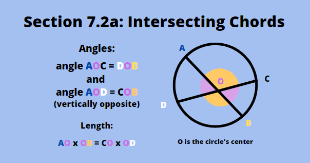
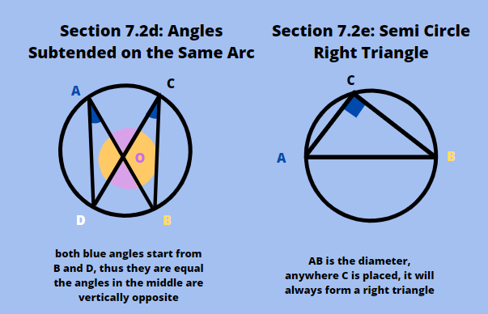
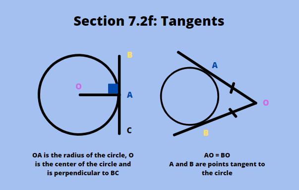
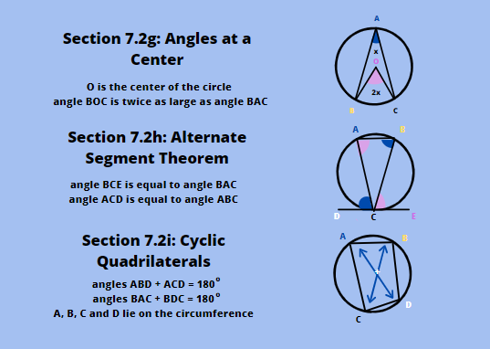

Circle theorems are hints or rules that apply when solving angles and other properties of circles. They usually tell you which side has the same length with another side, or which angle is the same as another angle. They help us determine the unknown angles or lengths of the radius or tangents on the circle. In real life, circle theorems are used by GPS (Global Positioning Systems) to calculate the distance between the starting point and the destination. It also helps sailors determine the direction and distance to where their ship is sailing.
Below are the segment theorems discussed as well as their diagrams, presented in the images on the right hand side. The angles that have the same measurement are color coded the same colors.
a. Intersecting Chords
This first theorem involves two chords intersecting inside a circle. A chord refers to a straight line in a circle that goes from one point on the circumference to another. When the two chords intersect, they create 4 angles. The angles facing opposite to each other are equal in measurement. On the diagram on the picture on the right, AB and CD are the chords, and O is the center of the circle. We have the formula AO x OB = CO x OD.
b. Isosceles Triangles and Radii
When the diameter of the circle is 'bent' into two radii that subtends a center angle, and a chord is draw to join the two radii, the triangle formed is isosceles. The two sides are the same because both are the circle's radii. The two angles between the chord and the radii are equal to one another.
c. Perpendicular Chord Bisection
Related to the previous theorem, when a line is drawn in the middle of the isosceles triangle from the center angle to the chord, it creates a right angle. It divides the chord into two equal parts, and the triangle into two congruent, smaller triangles.
d. Angles Subtended on the Same Arc
When you draw a letter 'X' inside a circle, and draw another two chords beside it, the angles formed on two two points lying parallel to each other are equal. You can also notice that the middle angles are equal to the ones opposite them (vertically opposite angles).
e. Semi Circle Right Angle
When you have the diameter of the circle, any two new chords that you draw within one of the circle's halves will form a right angle. The diameter is usually the hypotenuse.
f. Tangents
A tangent refers to a line that doesn't intersect the circle, but touches its circumference from the outside. When you have a tangent line on a circle, and draw a radius towards it, it can form a 90o angle. Also, if there are two tangent lines outside the circle, and these two lines intersect each other, their lengths from the point it touches the circle's circumference to the point where they intersect are the same.
g. Angles at the Center
The angle between the two radii is twice larger than the angle between the two chords that start from the same points as the radii. This only applies when the angle is at the center, if the two lines that subtend it are not the radii, this theorem doesn't apply.
h. Alternate Segment Theorem
When a a line is tangent to a circle, and one angle of a triangle is directly placed on it, the angles between the sides of the triangle and the tangent line are eual to the other two angles inside the triangle. This theorem is called the alternate segment theorem because one angle is equal to the angle in the alternate segment from its position.
i. Cyclic Quadrilaterals
A cyclic quadrilateral refers to a 4-sided shape that has all of its 4 points on the circumference of the circle. Angles that face oppositely to each other add up to 180o.